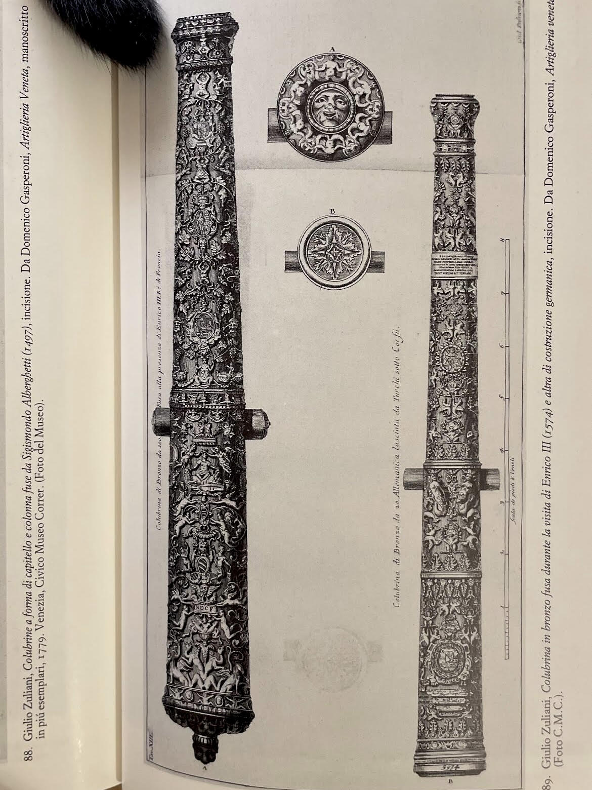

The weapons are not only instruments of destruction, but also surfaces of vision, as ornament transforms violence into spectacle and turns power into image.
"One becomes aware of being subject to wonder at the very moment when one no longer feels safe: yes, wonder is both a salvation and a refuge from that vague sense of the new from which many historical eras have failed to protect themselves, and which still does not appear empty or vain even to us."
Illustration and quote from Manlio Brusatin's book "Arte della Meraviglia".